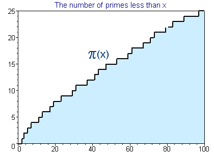
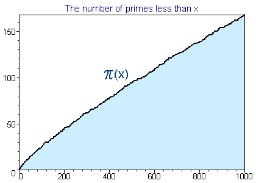
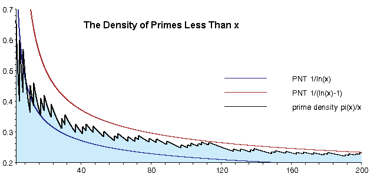
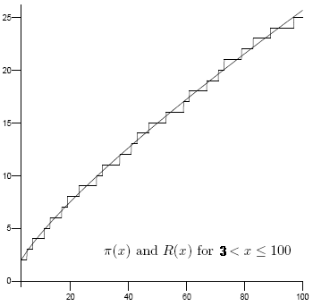

How Many Primes are There?
Contents:
- Introduction: Asking the Correct Question
- The Prime Number Theorem
- Consequence One: You can Approximate π(x) with x/(ln x - 1)
- Consequence Two: The nth prime is about n ln n
- Consequence Three: The chance of a random integer x being prime is about 1/ln x
- History of the Prime Number Theorem and other approximations of π(x)
- There are better estimates!
![[up]](gifs/up.gif) 1. Introduction: Asking the Correct Question
1. Introduction: Asking the Correct Question
Over 2,300 years ago Euclid proved that the number of primes is infinite, so two possible questions come to mind:
- Let x > 0. How many primes are there less than the number x?
- There are infinitely many primes, but how big of an infinity?
This document will focus on the first question. The second question is discussed on the page "How Big of an Infinity?."
1.1. π(x) is the number of primes less than or equal to x
Let x be a positive real number. The question "how many primes are there less than x?" has been asked so frequently that its answer has a name:
The primes under 25 are 2, 3, 5, 7, 11, 13, 17, 19 and 23 so π(3) = 2, π(10) = 4 and π(25) = 9. (A longer table can be found in the next sub-section.) Look at the following graph and notice how irregular the graph of π(x) is for small values of x.
 Now back up and view a larger portion of the graph of π(x). So even though π(x) is "locally" irregular, there is a definite trend to its values. (Graph to 1,000,000.)
{kind=link}
In this document we will study the function π(x), the prime number theorem (which quantifies this trend) and several classical approximation to π(x).
1.2. A Table of values of π(x)
For the smaller values of x in this table (say to 10,000,000,000) the value of π(x) can be found by finding and counting all of the primes.
Before the age of computers many mathematicians formed tables of primes. The most widely distributed was D. N. Lehmer's table of primes to 10,006,721 [Lehmer14]. By far the most amazing was a table by Kulik completed in 1867. This table listed the smallest factors of integers (hence all the primes) up to 100,330,200!
In the 1870's Meissel developed a clever way to calculate π(x) far beyond the known tables of primes and in 1885 (slightly mis-)calculated π(109). Meissel's methods were simplified by D. H. Lehmer in 1959 and then in 1985 improved using sieve techniques by Lagarias, Miller and Odlyzko [LMO85].
In 1994 Deléglise and Rivat [DR96] improved the technique once again to find the values for π(1017) and π(1018). Deléglise continued this work with an improved algorithm to find π(1020) and other values (see his e-mail messages of 18 Apr 1996 and 19 Jun 1996). See Riesel94 for practical information about how these calculations are made.
Xavier Gourdon's distributed computing project determined π(4*1022), but stopped when they found an error of at least one in the calculation of π(1023). Tomás Oliveira e Silva has extensive tables of values of π(x) and pi2(x). In 2007 he reevaluated π(1023) to get the value in the table. This calculation was done on a single machine and verified in 2008.
The value given for π(1024) was found by an analytic methods assuming the unproven Riemann Hypothesis by J. Buethe, J. Franke, A. Jost, T. Kleinjung. Their method "is similar to the one described by Lagarias and Odlyzko, but uses the Weil explicit formula instead of complex curve integrals" (see their e-mail announcing the result in July 2010). This value was later verified unconditionally by D. J. Platt [Platt2012].
In May 2013, J. Buethe, J. Franke, A. Jost, and T. Kleinjung completed calculating π(10^25) unconditionally, using an analytic method based on Weil's explicit formula.
2. The Prime Number Theorem: approximating π(x)
Even though the distribution of primes seems random (there are (probably) infinitely many twin primes and there are (definitely) arbitrarily large gaps between primes), the function π(x) is surprisingly well behaved: In fact, it has been proved (see the next section) that:
In terms of π(x) we would write:
This means (roughly) that x/ln x is a good approximation for π(x)--but before we consider this and other consequences lets be a little more specific:
"a(x) is asymptotic to b(x)" and "a(x) ~ b(x)" both mean that the limit (as x approaches infinity) of the ratio a(x)/b(x) is 1.
If you have not had calculus then this means that you can make a(x)/b(x) as close to 1 as you want by just requiring that x is large enough. Warning: a(x) ~ b(x) does not mean that a(x)-b(x) is small! For example, x2 is asymptotic to x2-x, but the difference between them, x, gets arbitrarily large as x goes to infinity.
Consequence One: You can Approximate π(x) with x/(ln x - 1)
| x | π(x) | x/ln x | x/(ln x -1) |
|---|---|---|---|
| 1000 | 168 | 145 | 169 |
| 10000 | 1229 | 1086 | 1218 |
| 100000 | 9592 | 8686 | 9512 |
| 1000000 | 78498 | 72382 | 78030 |
| 10000000 | 664579 | 620420 | 661459 |
| 100000000 | 5761455 | 5428681 | 5740304 |
The prime number theorem clearly implies that you can use x/(ln x - a) (with any constant a) to approximate π(x). The prime number theorem was stated with a=0, but it has been shown that a=1 is the best choice.
There are longer tables below and (of π(x) only) above.
Example: Someone recently e-mailed me and asked for a list of all the primes with at most 300 digits. Since the prime number theorem implies this list would have about 1.4*10297 entries we know that there can be no such list!
Note that Pierre Dusart [Dusart99] showed that if x>598 then
Consequence Two: The nth prime is about n ln n
Let p(n) be the nth prime. It is easy to show that the prime number theorem is equivalent to the statement
[see Hardy and Wright, page 10]. A better estimate is
[see Ribenboim95, pg. 249].
Example: These formulae predict that the one millionth prime is about 13,800,000 and 15,400,000 respectively. In fact, the one millionth prime is 15,485,863.
There have been many improvements on these bounds; for example, Robin [Robin83] showed that if n>8601 [actually Robin erroneously used 7021], then
More recently Massias and Robin [MR96] showed that if n > 15985, then
and if n > 13, then
(which is better for large n). Pierre Dusart [Dusart99] made these results stronger and showed
for all n. Dusart's article also gives better bounds getting even closer to the next term in the following well known asymptotic expansion for pn. The first terms of this asymptotic expansion were given by Cipolla [Cipolla1902] in 1902:
((ln ln (n))2 - 6 ln ln (n) + 11)/(2 log2 n) + O((ln ln n / ln n)3))
Again Ribenboim95 and Riesel94 are excellent starting places to look up more information. By the way, if you are interested in the nth prime for small n (say less than 1,000,000,000), then use the nth prime page."
Consequence Three: The chance of a random integer x being prime is about 1/ln x
Let x be a positive integer. Since about x/ln x of the x positive integers less than or equal to x are prime, the probability of one of them being prime is about 1/ln x.
Example: Suppose I want to find a 1000 digit prime. If I am choosing 1000 digit integers x to test for primality at random, then I'd expect to test about ln(101000) of them, or about 2302 integers before finding a prime. Obviously if I used odd integers I could multiply this estimate by 1/2, and if I choose integers not divisible by 3, then I could multiply by 2/3,...
Another way to say this is that the density of primes less than x is about 1/ln x. Below is a graph of the actual density for small values of x.

3. History of the Prime Number Theorem
In 1798 Legendre published the first significant conjecture on the size of π(x), when in his book Essai sur la Théie des Nombres he stated
Clearly Legendre's conjecture is equivalent to the prime number theorem, the constant 1.08366 was based on his limited table for values of π(x) (which only went to x = 400,000). In the long run 1 is a better choice than Legendre's 1.08366.
Gauss was also studying prime tables and came up with a different estimate (perhaps first considered in 1791), communicated in a letter to Encke in 1849 and first published in 1863.
Notice again that Gauss' conjecture is equivalent to the prime number theorem. Let's compare these estimates:
| x | π(x) | Gauss' Li | Legendre | x/(ln x - 1) | R(x) |
|---|---|---|---|---|---|
| 1000 | 168 | 178 | 172 | 169 | 168.4 |
| 10000 | 1229 | 1246 | 1231 | 1218 | 1226.9 |
| 100000 | 9592 | 9630 | 9588 | 9512 | 9587.4 |
| 1000000 | 78498 | 78628 | 78534 | 78030 | 78527.4 |
| 10000000 | 664579 | 664918 | 665138 | 661459 | 664667.4 |
| 100000000 | 5761455 | 5762209 | 5769341 | 5740304 | 5761551.9 |
| 1000000000 | 50847534 | 50849235 | 50917519 | 50701542 | 50847455.4 |
| 10000000000 | 455052511 | 455055614 | 455743004 | 454011971 | 455050683.3 |
In this table Gauss' Li(x) is always larger than π(x), this is true for all small x > 2. However in 1914 Littlewood proved that π(x)-Li(x) assumes both positive and negative values infinitely often. In 1986 Te Riele showed there are more than 10180 successive integers x for which π(x)>Li(x) between 6.62.10370 and 6.69.10370.
Tchebycheff made the first real progress toward a proof of the prime number theorem in 1850, showing there exist positive constants a < 1 < b such that
and that if π(x)/(x/ln x) had a limit, then its value must be one. Sylvester in 1982 refined Tchebycheff's method and showed that we can use a = 0.95695 and b = 1.04423 if x is large enough. (In 1962 it was shown that we can use a = 1 for all x > 10 [RS62].)
Finally, in 1896 Hadamard and independently de la Vallée Poussin completely proved the prime number theorem using Riemann's work relating π(x) to the complex zeta function. de la Vallée Poussin also proved that Gauss' Li(x) is a better approximation to π(x) than x/(ln x -a) no matter what value is assigned to the constant a (and also that the best value for a is 1). A much better approximation than any of these is the Riemann function [Ribenboim91, Riesel94].
In 1949 Atle Selberg [Selberg49] and Paul Erdös [Erdös49] independently gave the first elementary proofs of the prime number theorem-- here elementary means not using modern complex analysis--in fact their proofs are very difficult! An easier to read (but less elementary) proof is in Hardy and Wright's text [HW79 sect. 22.15-16].
Finally, when Hadamard and de la Vallée Poussin proved the Prime number theorem, they actually showed

for some positive constant a. The error term depended on what was known about the zero-free region of the Riemann zeta function within the critical strip. As our knowledge of the size of this region increases, the error term decreases. In 1901 von Koch showed that the Riemann hypothesis is equivalent to the far tighter estimate:

4.
More Accurate Estimates

This page focused on the prime number theorem in it simplest form, but there are far better estimates for π(x). To cut to the chase, the Riemann zeta function provides a way to give an exact formula for π(x) by summing over the non-trivial zeros of the zeta function (in order of increasing magnitude).
(At the primes, the graph of π(x) takes a step up one unit, this formula approches the value in the middle of that step.) The first (and dominant) term above is called Riemann's function R(x).
The last form above for R(x) is the Graham series and is an excellent way to calculate this function. The graph on the right shows how close of an approximaton R(x) is, at least for small values of x. An even better one for the smallest small x values is the following (they are essentially the same for large x).
To appreciate how close of an approximation these are, see the impressive tables of deviations by Andrey Kulsha.
Matthew R. Watkins also has a beautiful development of this information and some excellent animations.
Warning
Figure 4. Graph showing R(x), Li(x) and x/ln(x) approximate π(x)
It is easy to look at a graph like the one above which shows Li(x) (blue), R(x) (black), π(x) (red) and x/ln x (green); and then proclaim "R(x) is the best estimate of π(x)." Indeed it is for that range, but as we mentioned above, Li(x)-π(x) changes sign infinitely often, and near where it does, Li(x) would be the best value. A. E. Ingham says it this way:
Considerable importance was attached formerly to a function suggested by Riemann as an approximation to π(x)... This function represents π(x) with astonishing accuracy for all values of x for which π(x) has been calculated, but we now see that its superiority over Li(x) is illusory... and for special values of x (as large as we please) the one approximation will deviate as widely as the other from the true value.
... And we can see in the same way that the function Li(x)-(1/2)Li(x1/2) is 'on the average' a better approximation than Li(x) to π(x); but no importance can be attached to the latter terms in Riemann's formula even by repeated averaging.
The problem is that the contributions from the non-trivial zeros at times swamps that of any but the main terms in these expansions.